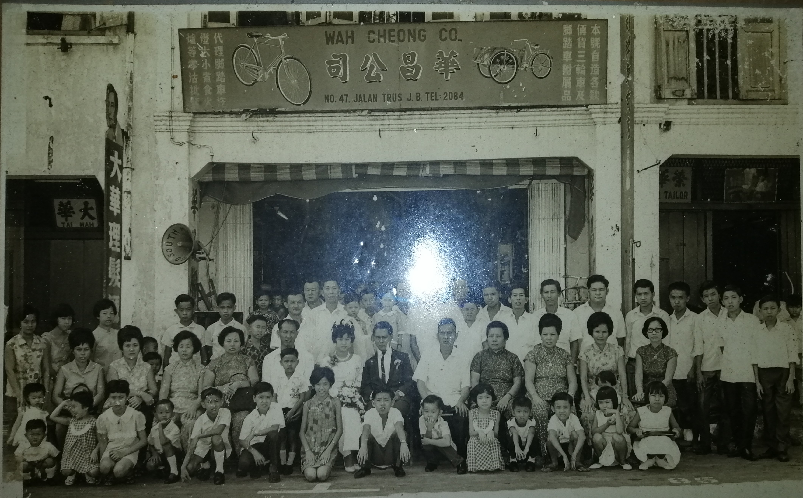
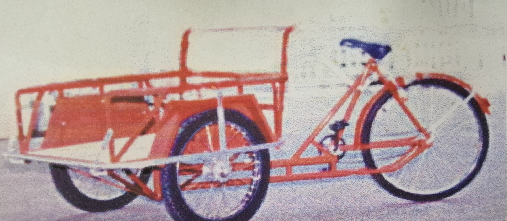

Our History
1930s
The first Wah Cheong Bicycle Shop officially opened in the 1930s and was founded by
Mr.Tan Kim Ruan in Jalan Trus.
1945

Mr. Tan Kim Ruan was killed by the Japanese in 1945, and the Wah Cheong Bicycle Shop was taken over by his elder brother Mr. Tan Kim Sheng.
1950


1981
In 1981, the new Wah Cheong bicycle shop was open by Mr. Tan Guang Ming at 395,Jalan Tebrau,
Taman Majidee.He is the son of Mr. Tan Kim Sheng.
1993